Analyzing High-Tech Export Dynamics in the EU (2012–2021)
Identifying key economic determinants using Elastic Net, PLM, and Clustering methods.
View Project CodeIntroduction & Project Scope
The primary objective of this study is to identify the key determinants that drive high-technology exports among countries. To minimize the influence of external factors unrelated to macroeconomic dynamics, the analysis focuses exclusively on member states of the European Union. Utilizing a panel dataset covering the years 2012 to 2021, the study incorporates a wide range of macroeconomic, commercial, political, and technology-related indicators.
- Target Variable High-Tech Exports (Current USD)
- Region EU Member States
- Time Period 2012 – 2021 (Panel Data)
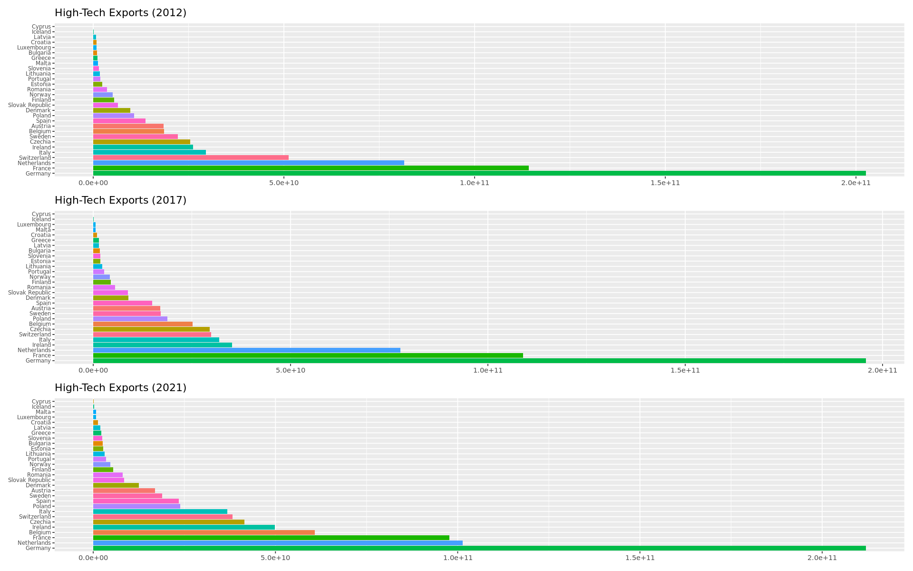
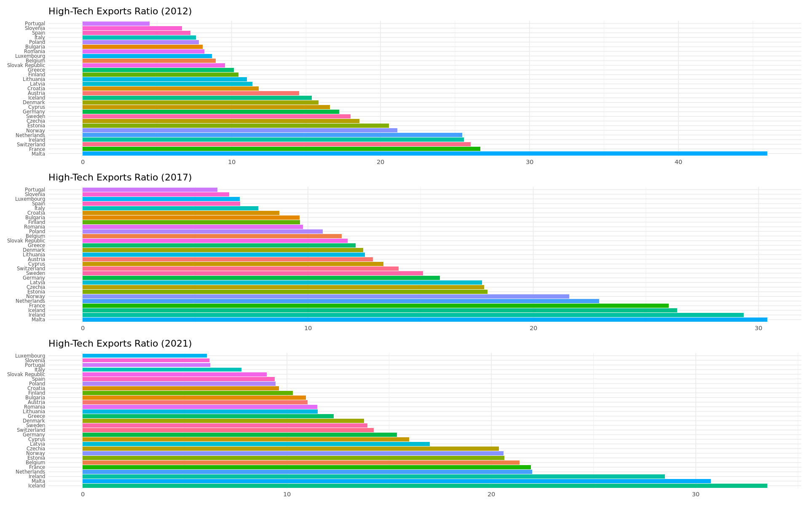
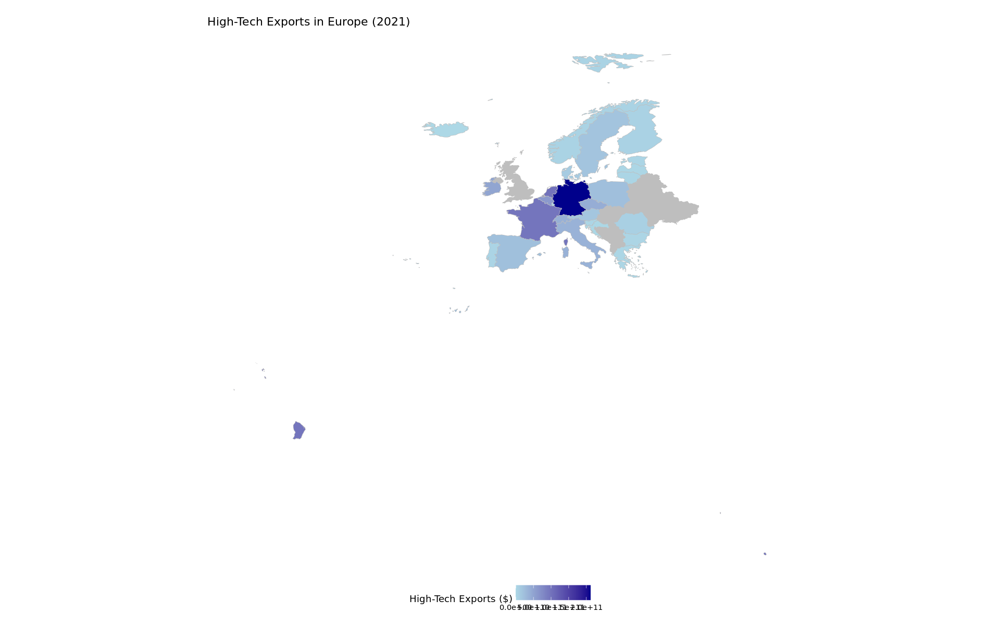
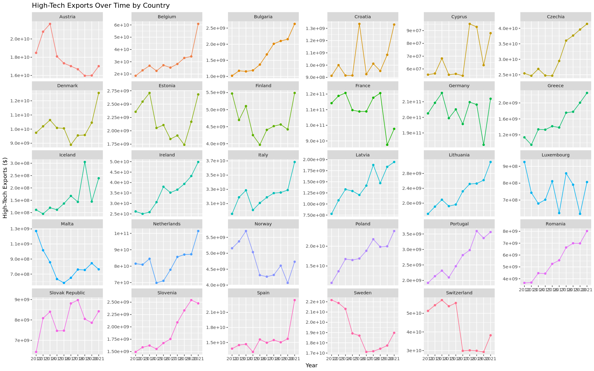
Elastic Net Regression
This Elastic Net model was run using only the raw feature set, excluding country and year dummies. It served as an initial step to filter out irrelevant or weak predictors. The selected features from this model were then used in a more comprehensive Elastic Net model that included country and year effects.
The results highlight the relative contributions of various economic indicators. Variables are presented in descending order of importance, with gross fixed capital formation emerging as the most influential factor. This is followed closely by GDP per employed person and trade as a percentage of GDP.

Correlation and Coefficient Direction Check
In this step, we cross-validated the direction and strength of the relationship between the selected features and the target variable. We calculated the Pearson correlation between each variable and the target, and compared it with the sign of the Elastic Net model coefficient. This ensures the model's direction (positive/negative effect) aligns with actual data trends.
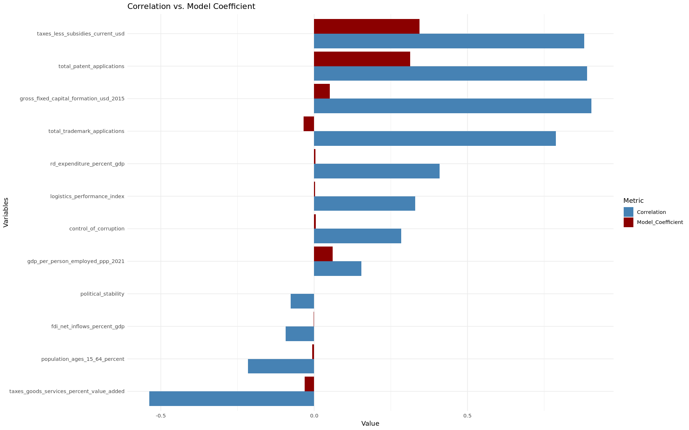
PLM Analysis & Multicollinearity Control
Initial PLM analysis identified "taxes_less_subsidies", "gdp_per_person_employed", and "control_of_corruption" as statistically significant.
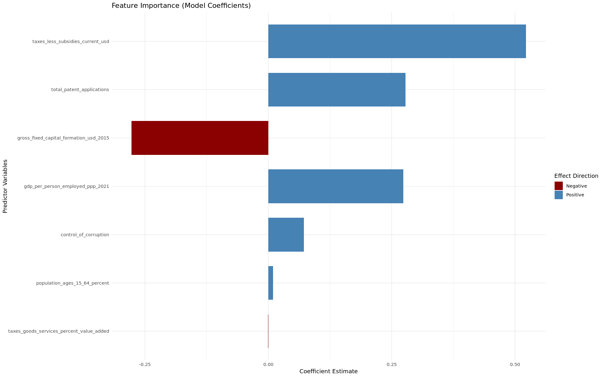
To refine the model, we applied a Variance Inflation Factor (VIF) check. Variables with high VIF scores were excluded to improve stability. The final PLM model confirmed that GDP per person employed, Control of Corruption, and Trade (% of GDP) are key drivers.
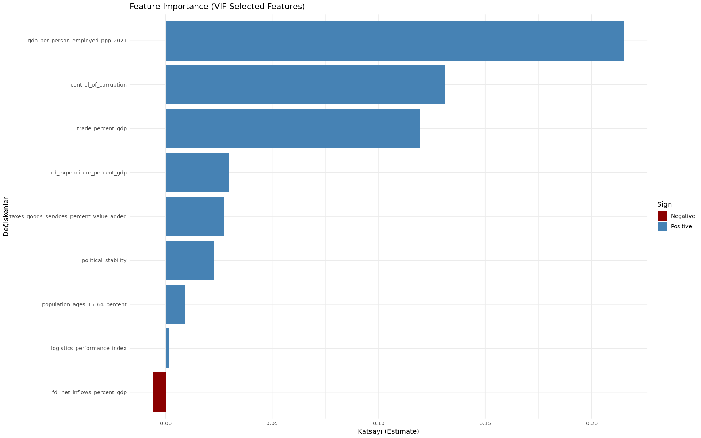
Decision Tree Analysis
We built a decision tree model to explore non-linear patterns. The features used were carefully selected based on previous Elastic Net and PLM results to ensure the tree was statistically grounded.
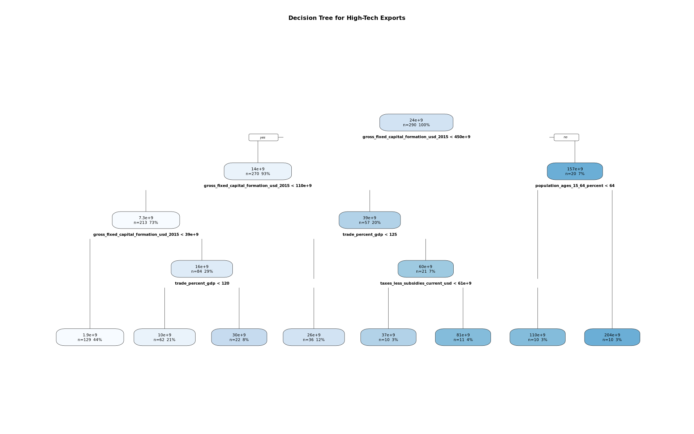
Key Interpretations
- Investment is King: The most influential variable is gross fixed capital formation. Countries with higher capital investment have significantly higher high-tech exports.
- Economic Openness: Trade as a percentage of GDP and net taxes are key secondary predictors.
- Success Profile: The highest exports (>$200B) are observed in countries with high investment, trade openness, and strong labor forces.
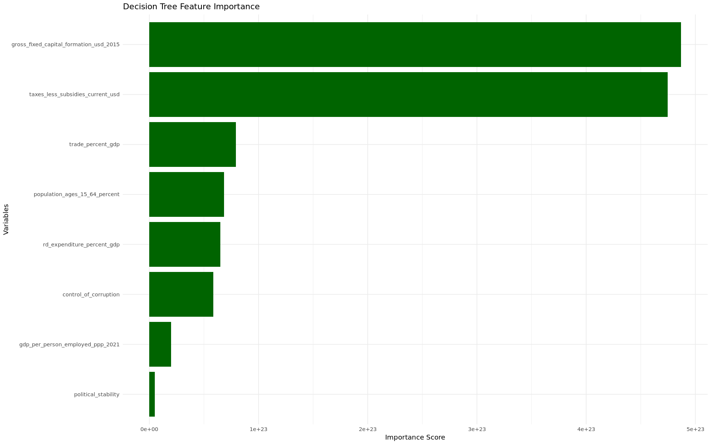
Clustering Analysis
Using the Elbow method on the scaled dataset, we identified an optimal number of k = 3 clusters.
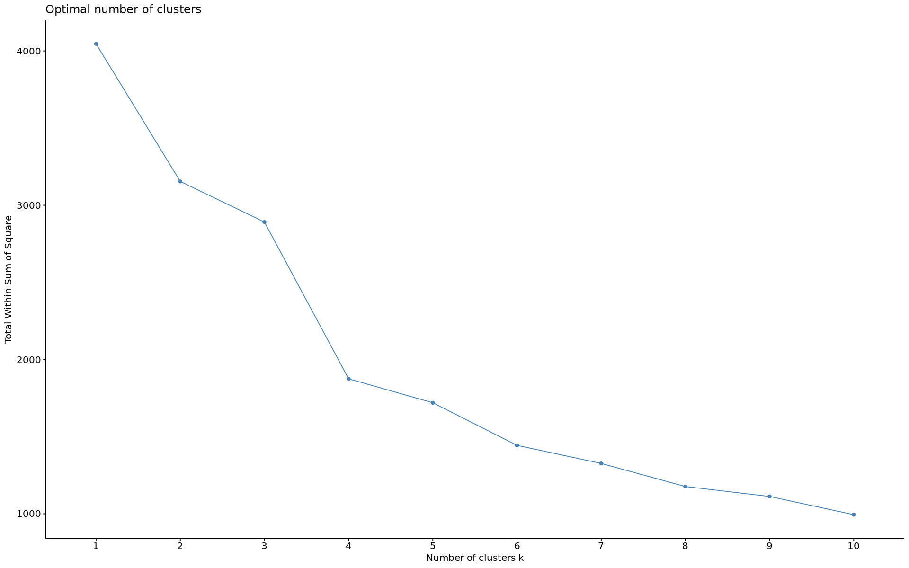
Cluster Profiles
1. Open & Wealthy
Germany, France
- Highest GDP/Capita (~$72k)
- Highest Trade Openness
- Strongest Institutions
2. Transitional
Italy, Spain, Poland, Greece +11 more
- Lower GDP/Capita (~$37k)
- Lowest R&D Spending
- Developing Institutions
3. Tech Powerhouses
Netherlands, Sweden, Belgium, Austria +8 more
- Highest R&D (2.61%)
- Huge Capital Formation
- Massive Export Volume
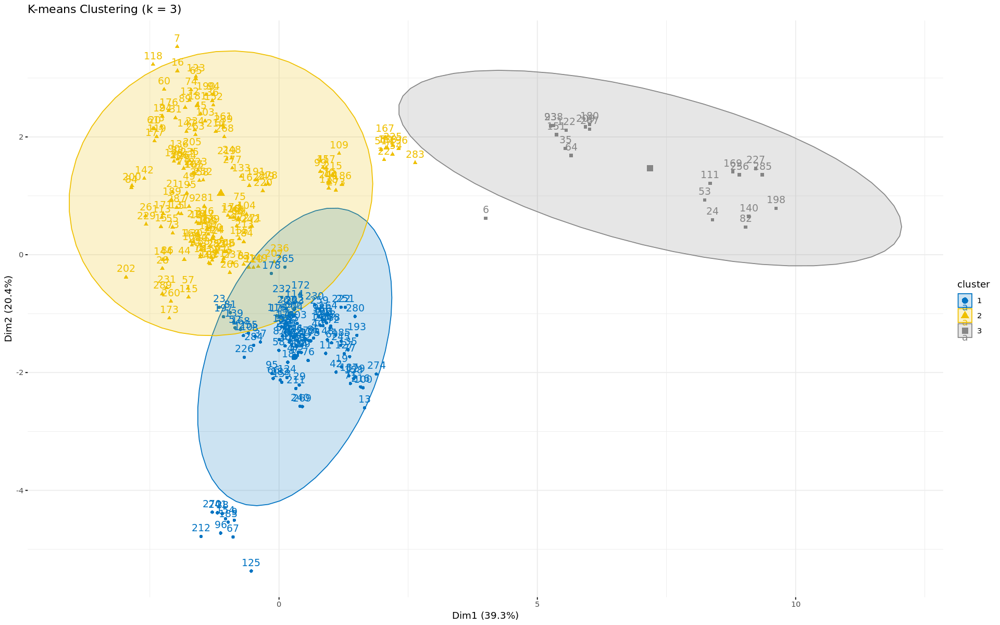
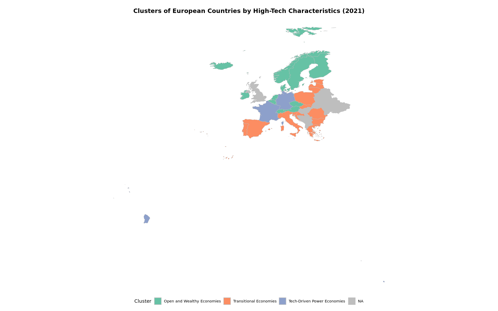
PCA: Country Trajectories (2012–2021)
The visual below tracks the movement of European countries in the PCA space over a decade. Dim 1 represents economic capacity (GDP, R&D), while Dim 2 represents institutional quality and demographics.
- Rising Stars: Estonia and Poland show steady upward/rightward movement, indicating structural improvement.
- Stable Giants: Germany and Sweden remain relatively stable, suggesting consistent high performance.
- Volatile Paths: Italy and Romania display more irregular paths, reflecting mixed progress.
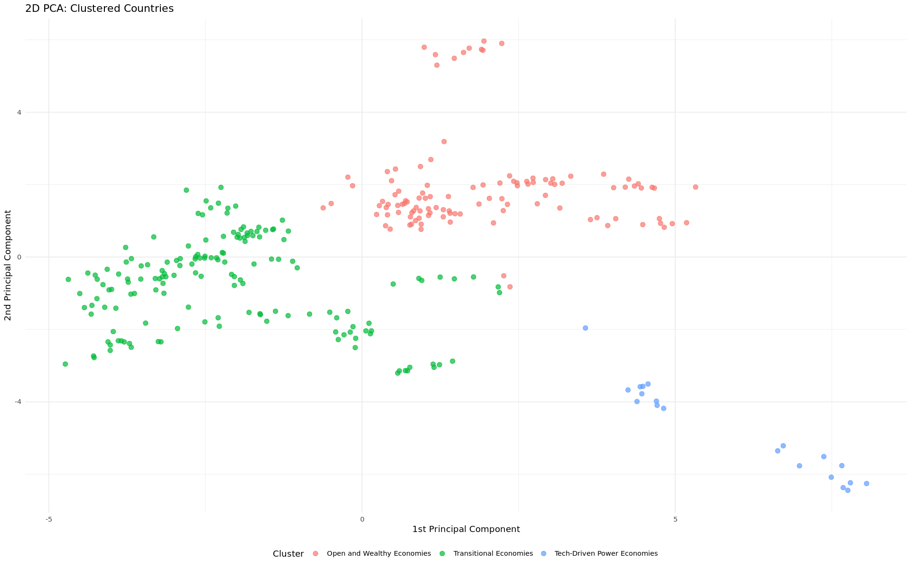
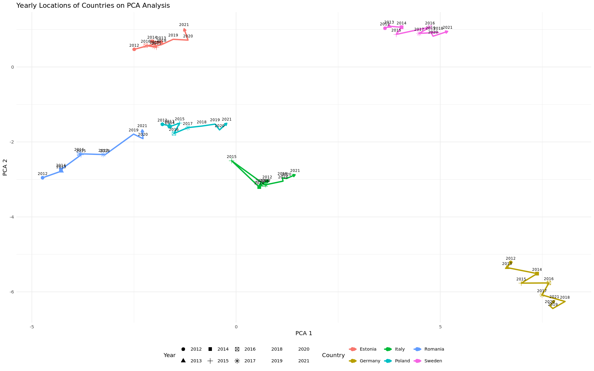
Conclusion
This study analyzed the drivers of high-tech exports in the EU using Elastic Net, PLM, and Clustering. Results confirmed that R&D expenditure, income per worker, and trade openness are the most critical predictors.
Clustering revealed distinct economic tiers: wealthy open economies, transitional markets, and innovation-driven leaders. The findings stress that for transitional economies to catch up, prioritizing capital investment and institutional strength is essential.